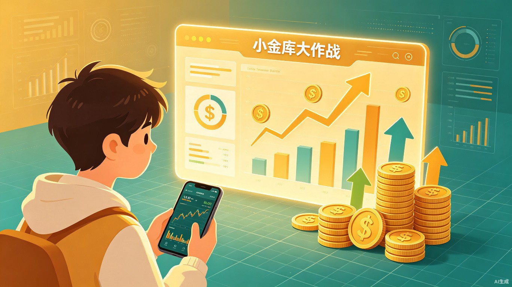
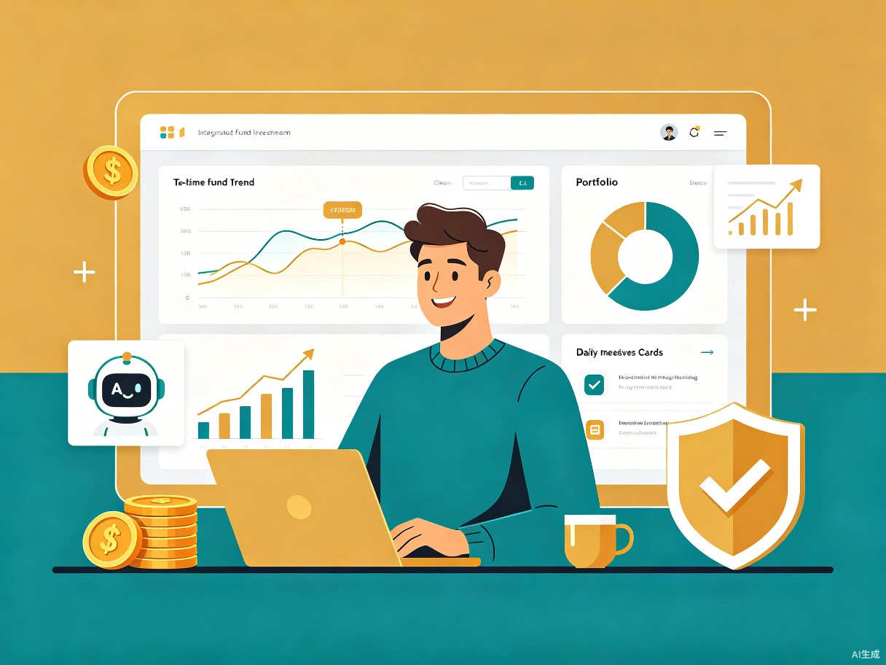

一、创意名称与创意介绍
创意名称
小金库大作战 — 一款帮助用户实时追踪基金盘中走势、预估收益并构建个人投资方案的智能理财网站。
想解决什么问题
当前主流基金购买平台（如天天基金、支付宝基金等）无法提供实时盘中走势，用户只能看到延迟的净值数据，严重影响当天买卖决策的时效性。此外，基金本质上是多只股票的集合，但投资者无法直观看到底层股票的动态走势与资金流向，导致决策信息严重不足。
为什么会想到做这个
我们希望通过技术手段，让每一位普通投资者都能看到盘中实时走势和预估收益，从而形成自己的投资决策能力。同时，平台提供每日盘面分析和投资方案构建功能，起到督促理财、培养良好投资习惯的作用，让理财不再是"有钱人的专利"。
大概是什么产品
二、目标用户及痛点
面向哪些用户
核心用户群体为初次接触股票基金、希望养成良好投资理财习惯的理财小白。这类用户通常具备以下特征：
大学生 / 职场新人
刚开始有储蓄意识，希望通过基金定投等方式实现资产增值，但缺乏投资知识和经验。
有闲散资金的工薪族
每月有一定结余，希望让"钱活起来"，但不知道如何选择基金、何时买卖。
理财意识觉醒者
意识到仅靠储蓄无法跑赢通胀，想要系统学习基金投资，但被复杂的信息劝退。
在什么场景下使用
每日盘中实时追踪
交易日 9:30–15:00，打开小金库查看所持基金的盘中走势、预估涨跌幅和资金流向。
下午盘决策提醒
交易日 14:45 自动推送盘面总结与操作建议，督促用户在收盘前做出理性决策。
盘后复盘分析
收盘后查看上午、下午盘面基本情况报告，了解市场整体走势与自身持仓表现。
投资方案构建
根据风险偏好和理财目标，在平台上构建并调整个人投资组合方案。
当前痛点分析
| 痛点类别 | 具体表现 | 影响程度 |
|---|---|---|
| 信息零散不整合 | 基金数据分散在多个平台，需要反复切换查看，无法一站式获取所需信息 | 高 |
| 无法看到盘中走势 | 主流平台仅提供T+1日净值更新，盘中无法看到实时估值和走势变化 | 极高 |
| 缺乏资金流向洞察 | 基金由多只股票组成，但用户无法看到底层股票的动态走势与资金流向 | 高 |
| 决策缺乏依据 | 没有专业的盘面分析和操作建议，买卖决策依赖"感觉"而非数据 | 极高 |
| 理财习惯难养成 | 缺少持续关注和督促机制，容易"三天打鱼两天晒网" | 中 |
三、产品解决方案

核心功能模块
盘中实时走势
基于基金底层持仓股票的实时行情数据，计算并展示基金的盘中预估走势曲线，刷新频率可达到分钟级，让用户不再"盲人摸象"。
预估收益计算
结合用户持仓份额和盘中估值，实时计算当日预估收益，以直观的数字和涨跌色标识呈现，帮助用户快速判断当日盈亏。
盘面分析报告
每日自动生成上午盘和下午盘的基本情况报告，涵盖大盘走势、行业板块表现、资金流向等关键信息，降低信息获取门槛。
投资方案构建
用户可根据自身风险偏好和理财目标，构建个性化投资组合方案，平台提供资产配置建议和组合回测功能。
决策提醒机制
交易日 14:45 自动推送盘面总结与操作建议，起到"理财闹钟"的作用，督促用户在收盘前做出理性决策。
资金流向追踪
展示基金底层股票的主力资金净流入/流出情况，帮助用户洞察市场资金动向，辅助判断买卖时机。
用户使用流程
flowchart LR
A[注册登录] --> B[添加自选基金]
B --> C[查看盘中走势]
C --> D[阅读盘面分析]
D --> E[获取决策提醒]
E --> F{是否操作?}
F -->|是| G[执行买卖操作]
F -->|否| H[继续持有观察]
G --> I[更新投资方案]
H --> I
I --> C
四、价值与意义
效率提升价值
小金库平台通过整合分散的基金数据，让用户在一个平台上即可完成信息获取、走势追踪、盘面分析和决策制定的全流程。相比传统方式需要在多个APP之间反复切换，决策效率提升显著，决策成本大幅降低。盘中实时走势功能填补了主流平台的信息空白，让用户不再依赖过时的净值数据做出买卖判断。
社会价值
促进居民理财意识提升
通过降低基金投资的信息门槛和操作门槛，让更多普通人敢于迈出投资理财的第一步。盘面分析报告和决策提醒机制，帮助用户在实践中逐步建立科学的投资理念，从"不敢投"到"会投"再到"投得好"。
建立经济认知体系
平台不仅提供基金走势数据，还通过每日盘面分析帮助用户了解宏观经济和微观市场的运行逻辑。用户在关注自身投资的同时，也在积累对经济形势、行业趋势、政策影响等方面的认知，实现"理财即学习"。
让钱活起来，让经济活起来
当更多居民将闲置资金投入基金等理财产品，不仅实现了个人资产的保值增值，也为资本市场注入了更多活力。居民理财意识的觉醒，有助于形成更加健康、多元的金融生态，促进经济的良性循环。
五、竞争优势
| 对比维度 | 主流基金平台 | 小金库大作战 |
|---|---|---|
| 盘中走势 | 仅提供延迟估值，无走势曲线 | 分钟级实时走势曲线 |
| 资金流向 | 不提供底层股票资金流向 | 展示主力资金净流入/流出 |
| 盘面分析 | 依赖第三方资讯，碎片化 | 自动生成结构化分析报告 |
| 决策提醒 | 无定时提醒机制 | 14:45 自动推送决策建议 |
| 投资方案 | 推荐产品为主，缺乏个性化 | 支持自定义组合构建与回测 |
| 目标用户 | 覆盖全量用户，功能复杂 | 聚焦投资小白，体验简洁 |
六、技术可行性
数据来源
通过合法合规的金融数据接口获取股票实时行情、基金持仓信息和资金流向数据，确保数据的准确性和时效性。
前端技术
采用现代Web技术栈构建响应式网站，支持PC端和移动端访问，确保用户随时随地查看盘中走势。
后端架构
基于微服务架构设计，支持高并发实时数据推送，保障交易日高峰时段的稳定运行。
智能分析
利用自然语言处理技术自动生成盘面分析报告，结合规则引擎提供个性化的操作建议。